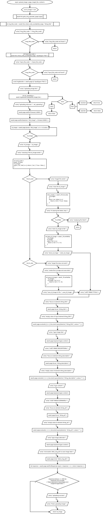

async upload_image ( page, target_file, content )
Flowchart

Code
async upload_image ( page, target_file, content ){
var id_image = null;
await this.goto_img_uploader_page( page );
let img_title_node = await this.check_node_availability( page, "#img_title" );
echo( "img_title_node: ", !!img_title_node );
if( !img_title_node ){
echo( "img_title_node not found" );
return;
}
let input_file_node = await this.check_node_availability( page, 'input[type="file"]' );
echo( "input_file_node: ", !!input_file_node );
if( !img_title_node ){
echo( "input_file_node not found" );
return;
}
const imgHandler = await page.$( 'input[type="file"]' );
echo( "uploading image file" );
let ret_uploading = await imgHandler.uploadFile( target_file )
.then(
(resolved)=>{
return true;
},
(rejected)=>{
return false;
}
)
.catch( (err) => {
return false;
})
echo( "uploading returned : ", ret_uploading );
await page.waitForTimeout( 10000 );
await page.waitForSelector( "#id_image", { timeout:20000 } );
do{
id_image = await page.$eval( "#id_image", el => el.value );
} while( !id_image );
echo( "id_image: ", id_image );
// check if file exists
echo( "checking if file id_image exists" );
var ret_fs_stat = await _FS.stat("id_image", async ( err, stat )=>{ return ( !err ) ? true : false; } );
if( !!ret_fs_stat ){
echo( "target file exists" );
echo( "clear file id_image" );
let is_empty = await _FS.truncate( "id_image", 0, async ( err, bytes )=>{
return (( !err ) ? true : false);
} );
echo( "if clearing file failed, stop." );
if( !is_empty ){
echo( "emptying file failed" );
return;
}
echo( "store id_image to file" );
let store_id_image = await _FS.writeFile( "id_image", id_image, async ( err )=>{
return (( !err ) ? 1 : 0 );
} );
echo( "store_id_image: ", store_id_image );
} else if( !ret_fs_stat ){
echo( "target file does not exist" );
echo( "create file id_image and save data" );
let save_id_image = await _FS.writeFile( "id_image", id_image, ( err )=>{
return (( !err ) ? 1 : 0);
} );
echo( "save_id_image to file: ", save_id_image );
}
echo( "\nSET IMAGE TITLE\n" );
echo( "focus on element #img_title" );
await page.focus( "#img_title" );
echo( "empty value of input element #img_title" );
await page.evaluate( ()=>{ document.querySelector( "#img_title" ).value="" } );
echo( "type image title" );
await page.keyboard.type( content );
echo( "\nSET IMAGE DESCRIPTION\n" );
echo( "focus on element #img_description" );
await page.focus( "#img_description" );
echo( "empty value of element #img_description" );
await page.evaluate( ( )=>{ document.querySelector( "#img_description" ).value="" } );
echo( "type content" );
await page.keyboard.type( content );
echo( "\nSET IMAGE ALTERNATE\n" );
echo( "focus on element #img_alt" );
await page.focus( "#img_alt" );
echo( "empty value of element #img_alt" );
await page.evaluate( ( )=>{ document.querySelector( "#img_alt" ).value="" } );
echo( "type image alternate" );
await page.keyboard.type( content );
echo( "click button #btn_img_attr to save image data" );
await page.click( "#btn_img_attr" );
let response = await page.waitForResponse( async ( response ) => { return response } );
if( response.status() == 200 && response.url().includes( 'https://palmerah.implantgigi.com/insight/image/index/' ) ){
echo( "uploading success" );
echo( "finish uploading image" );
}
return id_image;
}
Refers to:
async goto_img_uploader_page( page )
async check_node_availability ( page, node_identity )